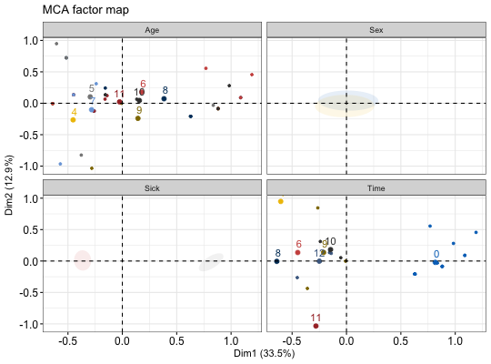

Draw confidence ellipses around the categories
fviz_ellipses(X, habillage, axes = c(1, 2), addEllipses = TRUE,
ellipse.type = "confidence", palette = NULL, pointsize = 1,
geom = c("point", "text"), ggtheme = theme_bw(), ...)
Arguments
- X
- an object of class MCA, PCA or MFA.
- habillage
- a numeric vector of indexes of variables or a
character vector of names of variables. Can be also a data frame containing grouping variables.
- axes
- a numeric vector specifying the axes of interest. Default values
are 1:2 for axes 1 and 2.
- addEllipses
- logical value. If TRUE, draws ellipses around the
individuals when habillage != "none".
- ellipse.type
- Character specifying frame type. Possible values are
'convex' or types supporeted by
stat_ellipse
including one of c("t", "norm", "euclid").
- palette
- the color palette to be used for coloring or filling by
groups. Allowed values include "grey" for grey color palettes; brewer
palettes e.g. "RdBu", "Blues", ...; or custom color palette e.g. c("blue",
"red"); and scientific journal palettes from ggsci R package, e.g.: "npg",
"aaas", "lancet", "jco", "ucscgb", "uchicago", "simpsons" and
"rickandmorty".
- pointsize
- the size of points
- geom
- a text specifying the geometry to be used for the graph. Allowed
values are the combination of c("point", "text"). Use "point" (to show only
points); "text" to show only labels; c("point", "text") to show both types.
- ggtheme
- function, ggplot2 theme name. Default value is theme_pubr().
Allowed values include ggplot2 official themes: theme_gray(), theme_bw(),
theme_minimal(), theme_classic(), theme_void(), ....
- ...
- Arguments to be passed to the functions ggpubr::ggscatter() &
ggpubr::ggpar().
Value
a ggplot
Examples
# Multiple Correspondence Analysis
# +++++++++++++++++++++++++++++++++
library(FactoMineR)
data(poison)
res.mca <- MCA(poison, quanti.sup = 1:2,
quali.sup = 3:4, graph=FALSE)
fviz_ellipses(res.mca, 1:4, geom = "point",
palette = "jco")
#> Warning: production de NaN
#> Warning: production de NaN
#> Scale for 'colour' is already present. Adding another scale for 'colour',
#> which will replace the existing scale.
#> Scale for 'fill' is already present. Adding another scale for 'fill', which
#> will replace the existing scale.
#> Warning: Computation failed in `stat_conf_ellipse()`:
#> valeur manquante là où TRUE / FALSE est requis
#> Warning: Computation failed in `stat_conf_ellipse()`:
#> valeur manquante là où TRUE / FALSE est requis
#> Warning: This manual palette can handle a maximum of 10 values. You have supplied 32.
#> Warning: Removed 144 rows containing missing values (geom_point).
#> Warning: Removed 22 rows containing missing values (geom_point).
